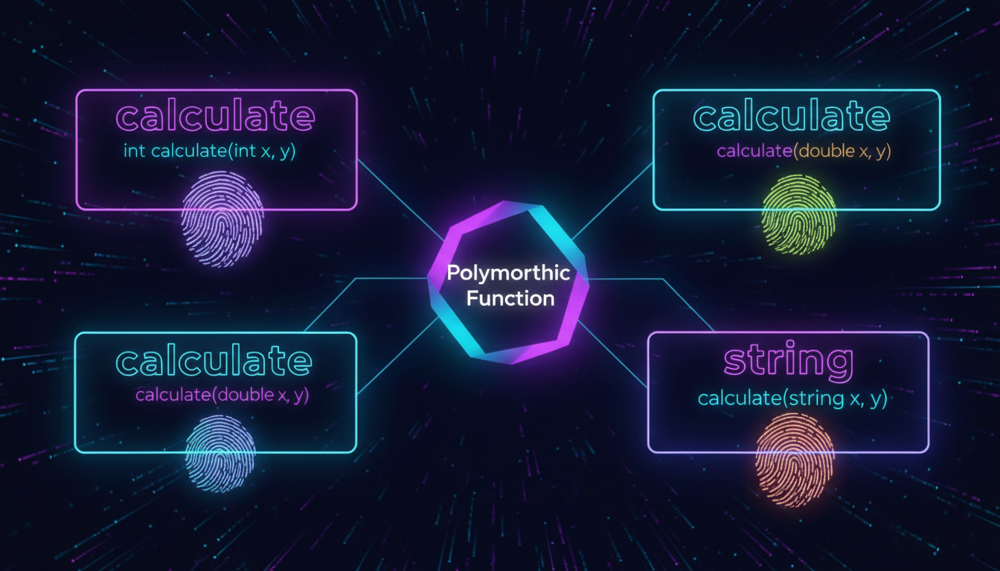

Правила перевантаження, неоднозначності, best match

Перевантаження функцій — це можливість мати кілька функцій з однаковим іменем, але різними списками параметрів. C++ визначає потрібну функцію на етапі компіляції.
#include <iostream>
// Три версії функції max
int max(int a, int b) {
return (a > b) ? a : b;
}
double max(double a, double b) {
return (a > b) ? a : b;
}
double max(double a, double b, double c) {
return max(max(a, b), c);
}
int main() {
std::cout << max(5, 3) << std::endl; // int версія
std::cout << max(2.5, 3.7) << std::endl; // double версія
std::cout << max(1.0, 5.0, 3.0) << std::endl; // Три параметри
return 0;
}| Критерій | Може перевантажувати? |
|---|---|
| Кількість параметрів | ✓ Так |
| Типи параметрів | ✓ Так |
| Порядок параметрів | ✓ Так |
| Тип повернення | ✗ Ні |
| Ім'я параметрів | ✗ Ні |
// Неоднозначний виклик!
void func(int x);
void func(long x);
// func(5); // ПОМИЛКА: 5 може бути і int, і long!
// Розв'язання — явне приведення
func(static_cast<int>(5));
func(static_cast<long>(5));